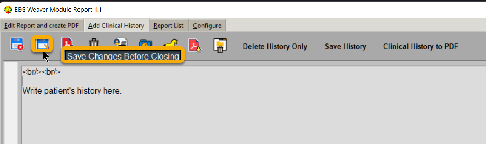
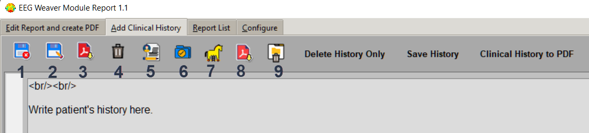

Add Clinical History (Tab2)
If you want to store a thorough patient clinical history tipe it in Tab two and click in “Save Changes Before Closing”.
Commands in Tab2 are:
“Save as New Report” - saves report first time, and creates a copy of report displayed in Tab1 each time it is clicked.
“Save Changes before Closing” - updates report edited. Remember to click before closing.
3. “Create and Save Report to PDF” - select a folder and creates a pdf or save over a previously created pdf. If a pdf is opened in another app, remember to close it before trying to overwrite it.
“Delete All Fields” - cleans all text.
“Delete All Fields Keep Clinical History” - cleans all in Tab1.
“Save Clinical History Text” - saves only Tab2 text.
“Delete History Only” - deletes only Tab2 text.
8. “Clinical History to PDF” - creates a pdf only for text in Tab2. Clinical History is not automatically created when you create An EEG Report.
“Delete This Report” - deletes the report in use (displayed in Tab1) as well as history (TAb2).